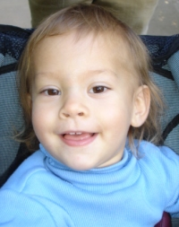

|  |
DRU Winter 2005 No surface is safe for Dru, who is rolling over dangerously now. She is also learning to sit up and has even cut her first two teeth - and all at the tender age of only 6 months. Dru loves her big sister, Cage, who can make her laugh hysterically by jumping up and down. Want to know more about Dru? CLICK HERE for her spotlight. |